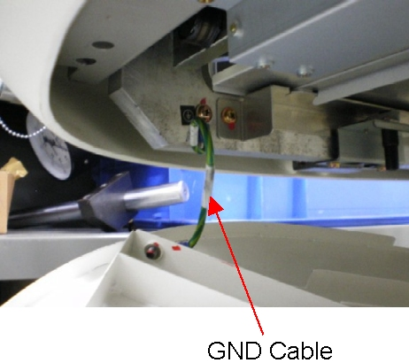
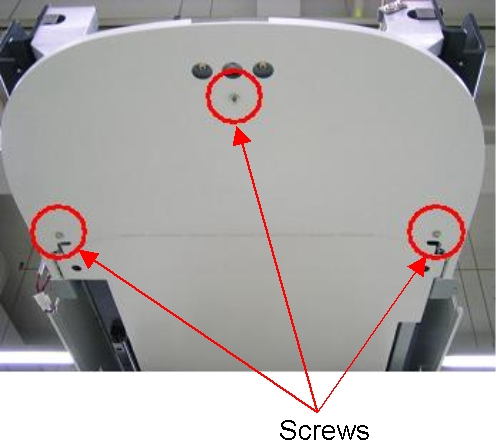
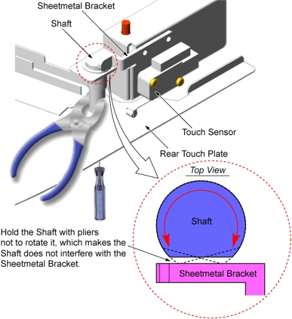
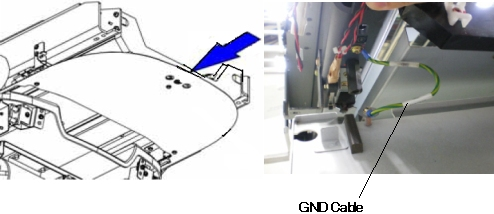

Operating Documentation
Direction 5193575-800, Rev# 5
LightSpeed 7.X Service Information - Adv
Operating Documentation |
| Required Persons | Preliminary Reqs | Procedure | Finalization |
|---|---|---|---|
| 1 |
| Last Revised: | 21 January 2008 |
| Item | Qty | Effectivity | Part# | Manufacturer | |
|---|---|---|---|---|---|
| Rear Touch Plate (for Global PET/CT Table) | 1 | - | 5119698 | - | |
| Rear Touch Plate (for GT2000) | 1 | - | 5119698 | - | |
| Rear Touch Plate Assemble (for GT1700) | 1 | - | 5191755 | - | |
Raise the Table to maximum height.
Move the Cradle to IN limit position.
Remove power from Table by turning off 120VAC, Axial Drive and HVDC switches on Service Switch Panel.
Remove the following Table covers:
Top Cover (Left/Right)
Rear Top Cover
Rear Top Plate (for GT2000 only)
Illustration 1: Table Cover Removal

For GT2000 and Global PET/CT Table:
Disconnect the GND cable from the rear touch plate.
Illustration 2: GND Cable of Rear Touch Plate

Remove 3 screws holding the rear touch plate to the Table frame, and remove the touch plate.
Illustration 3: Rear Touch Plate - GT2000 and Global PET/CT Table

Attach the rear touch plate to the Table, and connect the GND cable to new rear touch plate, then hand tighten three (3) screws.
Push up the rear touch plate several times, and verify that the touch sensor is activated.
Hold the shaft with pliers to avoid rotating it, and tighten the screw.
Illustration 4: Rear Touch Plate Installation

Push up the rear touch plate, and verify that each touch sensor is activated.
If not, adjust the position of rear touch sensor according to Touch Sensor Positioning.
For GT1700:
Slide the rear touch plate away from the Gantry, to release the inside hook of the plate, and remove the touch plate.
Disconnect the GND cable from the rear touch plate.
Illustration 5: Rear Touch Plate Removal

Remove 3 screws and washers from the removed rear touch plate, and transfer them to new rear touch plate.
Illustration 6: New Rear Touch Plate

Connect the GND cable to new rear touch plate, and install it to the Table.
Illustration 7: GND Cable of Rear Touch Plate

Push up the rear touch plate, and verify that each touch sensor is activated.
If not, adjust the position of rear touch sensor according to Touch Sensor Positioning.
Re-install the Table covers.
Power up the Table from the service Switch Panel in Gantry.
Push up the rear touch plate, and verify that each touch sensor is activated.